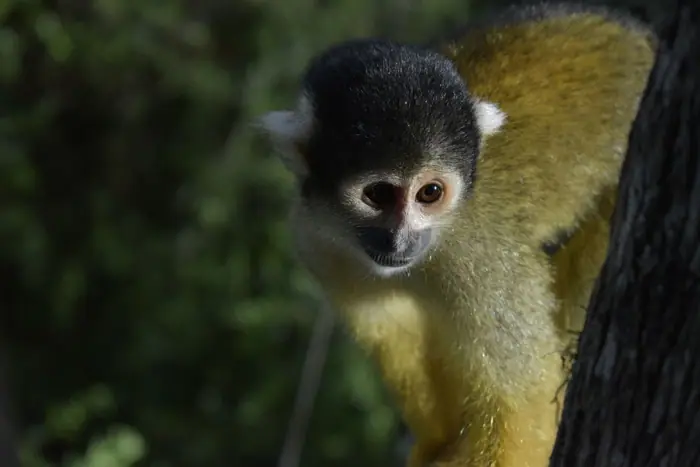

Pets · Mastodon #worldnews · Sep 17, 2026
New cat species identified in Bolivia for first time in more than a century
New cat species identified Bolivia: Mastodon #worldnews

Introduction
New cat species identified Bolivia: Mastodon #worldnews
Background & context (from research brief)
Why it matters
The development was reported by Mastodon #worldnews on Sep 17, 2026 as part of today's news cycle.
Source & further reading
This page aggregates the headline and context; the full original report is linked in the source panel below. Topic keywords: species, identified, bolivia, first, time.